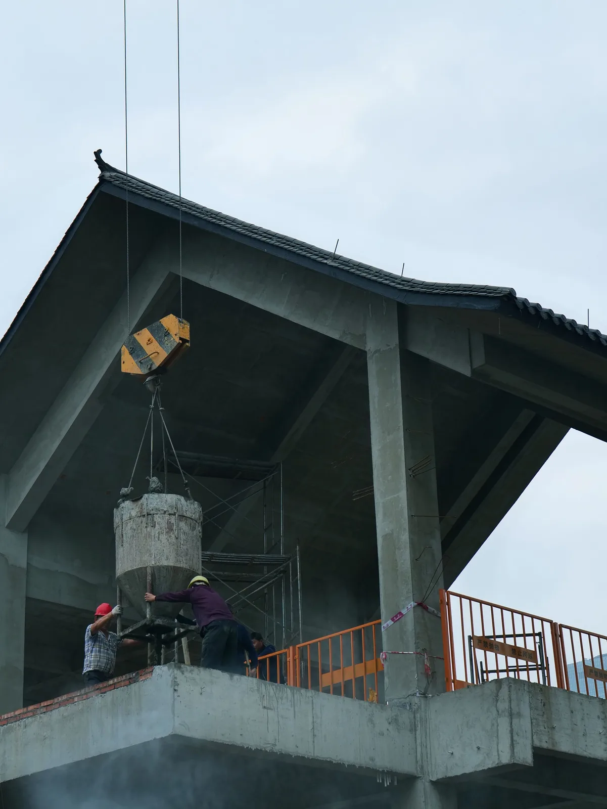

Work and energy
Why is carrying a heavy backpack along a level corridor not work in the physics sense, even though your shoulders get tired?
Prior knowledge
- Weight $G = mg$ and force as a measure of interactionchapter Force as a measure of interaction and weight $G = mg$
- Reading a graph: axes, units, slope of a straight line
Core path: follow the steps in order. Besides calculations, the core path includes investigations, explanations and graphs. Tasks marked Optional give extra practice. Optional tasks: 7.
Think about it
You carry a heavy backpack along a level corridor. Your shoulders get tired and you get out of breath. A lift raises the same backpack up three floors, and it does not seem to make any effort at all. In everyday language, both do work.
What should the word work mean in physics, so that the amount of work can be measured unambiguously?
Optional Recap: weight
Predict
Make your predictions before investigating 3 questions
Optional Prediction 1: the distance doubles
Prediction 2: the same pull, more slowly
Prediction 3: the backpack in the corridor
Investigate
Simulation
How to use
Speed only changes the pace of the animation: the crate moves the distance $s$ in the simulated time $t$, and $W$ and $P$ stay the same.
Assumptions of the model
The crate moves at a constant speed: the friction force is equal to the pulling force. The work done by the pulling force increases the internal energy of the crate and the floor, that is, the surfaces get warmer. The simulation calculates the values from the formulas $W = Fs$ and $P = W/t$, so it shows the consequences of the model; it does not measure them.
In the simulation a crate is pulled with a constant force. Adjust the force, the distance and the time, press Pull and watch how the area under the $(s,F)$ graph fills up. The values $W$ and $P$ are model values calculated by the simulation, not measurements of a real crate.
Experiment 1: only the distance changes
Test prediction 1. Keep the force and time constant and change only the distance. Record the work for at least two distances, for example $5\,\text{m}$, $10\,\text{m}$ and $20\,\text{m}$. Press Pull before recording so that you see the area of the graph fill up.
Initial state: $F$ = $60\,\text{N}$, $s$ = $10\,\text{m}$, $t$ = $5\,\text{s}$. Kept constant: $F$, $t$. Varied: $s$.
| $s$ | $W$ $(\text{J})$ |
|---|
More to investigate 3 tasks
Experiment 2: only the time changes
Test prediction 2. Now the force and distance are constant and only the time changes. Record the work and power for at least two times, for example $5\,\text{s}$, $10\,\text{s}$ and $20\,\text{s}$. What happens to the work? And to the power?
Initial state: $F$ = $60\,\text{N}$, $s$ = $10\,\text{m}$, $t$ = $5\,\text{s}$. Kept constant: $F$, $s$. Varied: $t$.
| $t$ | $W$ $(\text{J})$ | $P$ $(\text{W})$ |
|---|
Conclusion: what does work depend on?
In two or three sentences, write what you can conclude from your tables: how did the work depend on distance and on time, and how did the power depend on time? Did the results support your prediction 2? Finally, think about why the simulation readings alone do not prove the formula $W = Fs$ correct.
Model answer
When only the distance doubled, the work also doubled (for example $600\,\text{J} \to 1200\,\text{J}$): work is directly proportional to distance. When only the time changed, the work stayed at $600\,\text{J}$, but the power decreased ($5\,\text{s}$: $120\,\text{W}$, $20\,\text{s}$: $30\,\text{W}$): work does not depend on time, power does. The simulation calculates its readings from the formula $W = Fs$, so it shows what the model predicts but does not prove the model. Experimental justification comes from real measurements, such as Joule's experiment below.
Assess your own answer
Tick the points your own answer already contains.
Joule's experiment: where does the work go?
Simulated example data · invented values similar to Joule's experiment, not Joule's own measurements
In Joule's experiment a falling weight turns a paddle wheel in a vessel of water. The weight does work, the paddles stir the water, and the temperature of the water rises even though the water is not heated. The table shows the work done by the weight, $W = Gh$, and the increase in the internal energy of the water, $\Delta U$, calculated from the rise in the temperature of the water.
| Drops | $W$ (J) | $\Delta U$ (J) |
|---|---|---|
| 10 | 196 | 194 |
| 20 | 392 | 389 |
| 30 | 588 | 583 |
Theory
Key idea
In everyday language, work often means effort. In physics, work has a more precise meaning: a force does work when an object is displaced and the force has a component along the displacement.
When you carry a backpack horizontally at a steady speed, your force supporting the backpack points upwards, but the backpack is displaced horizontally. The force is perpendicular to the displacement, so the mechanical work done by this force is zero. Your muscles still use energy to hold the backpack up.
Work is a way of transferring energy. James Prescott Joule showed this in the 1840s by letting a falling weight turn a paddle wheel in water. The weight did work, and the water warmed by a measurable amount even though it was not heated: the work increased the internal energy of the water. In the experiments the warming of the water turned out to be proportional to the product of the weight and the falling distance, that is, the product of force and distance. This experimental result justifies the definition of work $W = Fs$ (formula below). The same warming can also be produced by heating, so work and heat are two ways of transferring energy, and both are measured in the same unit, the joule.
When you do work on an object, energy is transferred: the energy of a lifted object increases, a spring stretches and stores energy, and work done against friction warms the surfaces. Energy does not disappear; it changes form. Power tells you how fast work is done. Walking and running up the stairs you do the same work, but when running the power is greater. The $6\,\text{kW}$ power of a sauna heater means that every second it turns 6000 joules of electrical energy into internal energy, which is transferred as heat to the stones and the air.

Work and power
When a constant force is in the direction of motion, the work done by the force is the product of force and distance:
$$W = F s$$
where $W$ is the work (J), $F$ is the magnitude of the force (N) and $s$ is the distance moved by the object (m). One joule is the work done by a force of one newton over a distance of one metre: $1\,\text{J} = 1\,\text{N} \cdot \text{m}$.
If the force changes during the motion, the work is the area between the force curve and the $s$-axis in an $(s,F)$ graph. For a constant force the area is a rectangle with area $F \cdot s$, so the same rule works in both cases. You can find the area of a complicated graph by dividing it into rectangles, triangles and trapeziums.
When you lift an object upwards at a steady speed, the lifting force is equal to the weight of the object $G = mg$ (chapter Force as a measure of interaction and weight $G = mg$). The work of lifting to a height $h$ is therefore:
$$W = G h = m g h$$
where $G$ is the weight (N), $m$ is the mass (kg), $g = 9.81\,\text{m/s}^2$ and $h$ is the lifting height (m). The energy of the lifted object increases by exactly the amount of the lifting work.
Power is work divided by the time it takes. In motion at a steady speed, where the force is in the direction of motion, power can also be found as the product of force and speed, because $s/t = v$:
$$P = \frac{W}{t} = F v$$
where $P$ is the power (W), $t$ is the time (s) and $v$ is the speed (m/s). One watt is one joule per second: $1\,\text{W} = 1\,\text{J/s}$.
Common misconception
Work is not the same thing as effort: getting tired does not mean you have done work in the physics sense. Another common mistake is to mix up work and power: a large power does not mean a large amount of work, but work done quickly.
Summary
- A constant force in the direction of motion does the work $W = F s$. For a varying force, the work is the area under the $(s,F)$ graph.
- A force perpendicular to the motion does no work. That is why carrying something horizontally at a steady speed is not work done by the carrier's force.
- Work transfers energy: it can raise the energy of an object ($W = m g h$), stretch a spring or increase the internal energy of surfaces through friction. Joule's experiment showed that work and heat are two ways of transferring energy.
- Power is work per unit time: $P = W/t = F v$. Units: $1\,\text{J} = 1\,\text{N} \cdot \text{m}$ and $1\,\text{W} = 1\,\text{J/s}$.
Optional Return to your predictions
Compare your predictions with your measurements and with the model $W = Fs$. Also return to the opening question: why is carrying a backpack along a level corridor not work in the physics sense, even though your shoulders get tired?
Would you change your prediction?
Examples
Once you have studied the chapter's theory, move on to the guided examples. In the first you follow a worked solution step by step; in the next ones you make the choices yourself, and the hints help if you get stuck.
Example 1: Work done stretching a spring
A spring is stretched $20\,\text{cm}$. The stretching force increases steadily from zero to 40 newtons, as the graph shows. How much work does the stretching force do?
Step 1/7
Given and find. The stretch of the spring, that is, the distance moved by the force, is $s = 20\,\text{cm}$, and the greatest value of the force is $F_\text{max} = 40\,\text{N}$. The force increases steadily from zero. We want the work $W$ done by the stretching force.
Step 2/7
Principle. Work is the product of force and distance only when the force is constant. Here the force increases steadily, so the work is found as the area under the $(s,F)$ graph: the region between the graph and the $s$-axis is a triangle. The force is in the direction of motion, so the work is positive.
Step 3/7
Rearranged formula. The force is not constant, so the formula $W = Fs$ cannot be used directly. The work is the area $A_\text{triangle}$ of the triangle in the $(s,F)$ graph, which is half of the product of the base $s$ and the height $F_\text{max}$:
$$\begin{aligned} W &= A_\text{triangle} \\ &= \frac{1}{2} F_\text{max}\, s \end{aligned}$$
Step 4/7
Unit conversions. The distance is in centimetres, but work is calculated in joules, so the distance is converted to metres: $s = 20\,\text{cm} = 0.20\,\text{m}$. The force is already in newtons, so the product $\text{N}\cdot\text{m}$ is directly in joules.
Step 5/7
Substitution. We substitute the values with their units:
$$\begin{aligned} W &= A_\text{triangle} \\ &= \frac{1}{2} F_\text{max}\, s \\ &= \frac{1}{2} \cdot 40\,\text{N} \cdot 0.20\,\text{m} \\ &= 4.0\,\text{J} \end{aligned}$$
Step 6/7
Result. The stretching force does $4.0\,\text{J}$ of work, two significant figures like the given values $20\,\text{cm}$ and $40\,\text{N}$. The work does not disappear; the energy is stored in the stretched spring.
Step 7/7
Reasonableness. The force increases steadily, so its average magnitude is half of the peak value, $F_\text{avg} = 20\,\text{N}$. The average force gives the same result:
$$\begin{aligned} W &= F_\text{avg}\, s \\ &= 20\,\text{N} \cdot 0.20\,\text{m} \\ &= 4.0\,\text{J} \end{aligned}$$
If you calculated $40\,\text{N} \cdot 0.20\,\text{m} = 8.0\,\text{J}$, the result would be twice too large, because the force is not $40\,\text{N}$ over the whole distance.
Optional Example 2: Find the error
Optional Example 3: Apply to a new situation
An electric scooter travels at a steady $5.0\,\text{m/s}$. The motor pushes the scooter with a $48\,\text{N}$ force in the direction of motion, which cancels friction and air resistance.
How large is the power of the motor? Give your answer in watts.
Hint 1: a guiding question
Power is work per unit time. How far does the scooter travel in one second, and how much work does the force do over that distance?
Hint 2: what is the connection
When the force is in the direction of motion, $P = \dfrac{W}{t} = \dfrac{Fs}{t} = Fv$.
Hint 3: an intermediate step
Substitute:
Remember that $1\,\text{N}\cdot\text{m/s} = 1\,\text{W}$.
Show the solution
Given
force $F = 48\,\text{N}$ (in the direction of motion), speed $v = 5.0\,\text{m/s}$, motion at a steady speed
Find
power of the motor $P$ in watts
Principle
Power is work per unit time. The scooter moves at a steady speed and the force of the motor is constant and in the direction of motion, so the distance travelled in one second is $v$ and the work done in one second is $F v$.
Formula
$P = \dfrac{W}{t}$, $W = F s$ and $s = v t$, so
$$P = \frac{F v t}{t} = F v$$
Unit conversions
The force is in newtons and the speed in metres per second, so the product comes directly in watts: $1\,\text{N}\cdot\tfrac{\text{m}}{\text{s}} = 1\,\text{W}$.
Substitution
Answer
$240\,\text{W}$
Two significant figures like the speed $5.0\,\text{m/s}$.
Reasonableness
Check through time: in one second the scooter travels $5.0\,\text{m}$, the work is $48\,\text{N} \cdot 5.0\,\text{m} = 240\,\text{J}$ and the power is $\tfrac{240\,\text{J}}{1\,\text{s}} = 240\,\text{W}$. A little over two hundred watts is a typical riding power for a scooter on level ground.
Review the chapter's concepts
Cards you mark Review later collect in your review deck.
- Internal energy
- The energy of a system made up of the kinetic and interaction energies of its particles.
- Joule's experiment
- Mechanical work turning into internal energy is seen as a rise in the temperature of water.
- Work at constant pressure
- At constant pressure the work done by a gas depends on the pressure and the change in volume.$$W = p\Delta V$$
- Adiabatic change
- No heat is transferred between the system and the surroundings, so work changes the internal energy.
- Isothermal process
- The temperature and the internal energy of an ideal gas stay constant during the process.
Exercises
Level 1 · basic practice 8 exercises
One formula or one step of reasoning. Core exercises first, the rest is extra practice.
- Exercise 2-1Core
A moped is pushed in the direction of motion with an $80\,\text{N}$ force over a distance of 25 metres. How much work does the pushing force do?
Answer
$2.0\,\text{kJ}$
Show the solution
Given
$F = 80\,\text{N}$ (in the direction of motion), $s = 25\,\text{m}$
Find
the work $W$ done by the force in kilojoules
Principle
The pushing force is in the direction of motion and constant, so it does work equal to the product of force and displacement. If the force were at an angle or changed along the way, another method would be needed.
Formula
$W = F s$, so the work is already solved for: $W = F s$
Conversions
The force is in newtons and the distance in metres, so the product is directly in joules ($1\,\text{J} = 1\,\text{N}\cdot\text{m}$). Finally $1\,\text{kJ} = 1000\,\text{J}$.
Substitution
$W$$= 80\,\text{N} \cdot 25\,\text{m}$$= 2000\,\text{J}$$= 2.000\,\text{kJ}$Answer
$2.0\,\text{kJ}$
Two significant figures like the given values $80\,\text{N}$ and $25\,\text{m}$.
Reasonableness
Rough estimate: $80\,\text{N} \approx 8\,\text{kg}$ in weight, and
$8\,\text{kg}\cdot 10\,\tfrac{\text{m}}{\text{s}^2}\cdot 25\,\text{m}$$= 2000\,\text{J}$The same work would lift a $20\,\text{kg}$ object about $10\,\text{m}$:
$20\,\text{kg}\cdot 9.81\,\tfrac{\text{m}}{\text{s}^2}\cdot 10\,\text{m}$$\approx 2.0\,\text{kJ}$$W$ is positive because the force is in the direction of motion.
- Exercise 2-2
A bookcase weighs $150\,\text{N}$. The bookcase is lifted slowly from the floor to a height of $1.2\,\text{m}$. How much work does the lifting force do?
Answer
$180\,\text{J}$
Show the solution
Given
weight $G = 150\,\text{N}$, lifting height $h = 1.2\,\text{m}$, slow lift
Find
the work $W$ done by the lifting force in joules
Principle
In a slow lift the lifting force is equal to the weight and in the direction of motion, so the force is constant over the whole distance. The work is then the product of force and lifting height.
Formula
$W = F h$ and $F = G$, so $W = G h$
Conversions
The weight is in newtons and the height in metres, so no conversions are needed: $\text{N}\cdot\text{m} = \text{J}$.
Substitution
$W$$= 150\,\text{N} \cdot 1.2\,\text{m}$$= 180\,\text{J}$Answer
$180\,\text{J}$
Two significant figures like the height $1.2\,\text{m}$.
Reasonableness
Rough estimate: $150\,\text{N} \cdot 1\,\text{m} = 150\,\text{J}$, and the distance is a little over a metre. A weight of $150\,\text{N}$ corresponds to a mass of about $\tfrac{150\,\text{N}}{9.81\,\text{m/s}^2} \approx 15\,\text{kg}$, so the work corresponds to lifting a $15\,\text{kg}$ bookcase a little over a metre. $W$ is positive because the lifting force and the motion are both upwards.
- Exercise 2-3
The motor of a lift does $36\,\text{kJ}$ of work in 12 seconds. What is the power of the motor?
Answer
$3.0\,\text{kW}$
Show the solution
Given
work $W = 36\,\text{kJ}$, time $t = 12\,\text{s}$
Find
the power $P$ of the motor in kilowatts
Principle
Power tells you how fast work is done, that is, work per unit time. The motor does the work steadily in the given time, so the average power is the total work divided by the time.
Formula
$P = \dfrac{W}{t}$, so the power is already solved for: $P = \dfrac{W}{t}$
Conversions
$36\,\text{kJ}$$= 36 \cdot 1000\,\text{J}$$= 36\,000\,\text{J}$so that the result comes out in watts ($1\,\text{W} = 1\,\text{J/s}$). Finally $1\,\text{kW} = 1000\,\text{W}$.
Substitution
$P$$= \dfrac{36\,000\,\text{J}}{12\,\text{s}}$$= 3000\,\text{W}$$= 3.000\,\text{kW}$Answer
$3.0\,\text{kW}$
Two significant figures like the time $12\,\text{s}$.
Reasonableness
The units kilojoule and second give kilowatts directly:
$\tfrac{36\,\text{kJ}}{12\,\text{s}}$$= 3\,\tfrac{\text{kJ}}{\text{s}}$$= 3\,\text{kW}$With this power you could lift a load of about $300\,\text{kg}$ at a steady one metre per second:
$300\,\text{kg}\cdot 9.81\,\tfrac{\text{m}}{\text{s}^2}\cdot 1\,\tfrac{\text{m}}{\text{s}}$$\approx 2.9\,\text{kW}$This suits the motor of a lift.
- Exercise 2-4
The graph shows the magnitude of the force pulling a sledge, in the direction of motion, as a function of the distance travelled. Calculate the total work done by the force as the area under the graph.
Answer
$190\,\text{J}$
Show the solution
Given
read from the graph, force $F_1 = 25\,\text{N}$ over $0\ldots 6\,\text{m}$ and $F_2 = 10\,\text{N}$ over $6\ldots 10\,\text{m}$, the force is in the direction of motion
Find
the total work $W$ done by the force in joules
Principle
The work is the area between the $(s,F)$ graph and the $s$-axis. The force is not constant over the whole distance, so the formula $W = F s$ does not apply directly to the whole distance. The area splits into two rectangles in which the force is constant.
Reading the graph
The first horizontal segment is on the grid line $F_1 = 25\,\text{N}$ and extends from $s = 0$ to $s = 6\,\text{m}$, where it drops vertically. The second segment is on the line $F_2 = 10\,\text{N}$ and extends from $s = 6\,\text{m}$ to $s = 10\,\text{m}$. The width of the second rectangle is
$s_2$$= 10\,\text{m} - 6\,\text{m}$$= 4\,\text{m}$Formula
$W = W_1 + W_2$, so $W = F_1 s_1 + F_2 s_2$
Conversions
The forces are in newtons and the distances in metres, so no conversions are needed: $\text{N}\cdot\text{m} = \text{J}$.
Substitution
$W$$= 25\,\text{N} \cdot 6\,\text{m} + 10\,\text{N} \cdot 4\,\text{m}$$= 150\,\text{J} + 40\,\text{J}$$= 190\,\text{J}$Answer
$190\,\text{J}$
Two significant figures, because the values of the graph were read from the grid lines as whole numbers.
Reasonableness
The average force over the whole $10\,\text{m}$ is
$\dfrac{190\,\text{J}}{10\,\text{m}}$$= 19\,\text{N}$which lies between the smallest ($10\,\text{N}$) and the largest ($25\,\text{N}$) value of the force. If you calculated $25\,\text{N} \cdot 10\,\text{m} = 250\,\text{J}$ for the whole distance, you would get too large a result, because the force drops partway through.
- Exercise 2-5
A skier pulls a sled at a steady speed of $3.0\,\text{m/s}$ with a $20\,\text{N}$ force in the direction of motion. What is the power of the pulling force?
Answer
$60\,\text{W}$
Show the solution
Given
force $F = 20\,\text{N}$ (in the direction of motion), speed $v = 3.0\,\text{m/s}$, steady motion
Find
the power $P$ of the pulling force in watts
Principle
Power is work per unit time. The motion is steady and the force is constant and in the direction of motion, so the distance travelled in one second is $v$ and the work done in one second is $F v$.
Formula
$P = \dfrac{W}{t}$ and $W = F s$, $s = v t$, so $P = \dfrac{F v t}{t} = F v$
Conversions
The force is in newtons and the speed in metres per second, so the product comes directly in watts: $1\,\text{N}\cdot\tfrac{\text{m}}{\text{s}} = 1\,\text{W}$.
Substitution
$P$$= 20\,\text{N} \cdot 3.0\,\tfrac{\text{m}}{\text{s}}$$= 60\,\text{W}$Answer
$60\,\text{W}$
Two significant figures like the speed $3.0\,\text{m/s}$.
Reasonableness
Check through time: in one second the sled travels $3.0\,\text{m}$, so the work is $20\,\text{N} \cdot 3.0\,\text{m} = 60\,\text{J}$ and the power is $\tfrac{60\,\text{J}}{1\,\text{s}} = 60\,\text{W}$. A power of a few tens of watts is typical for the pulling power at a brisk walking pace.
- Exercise 2-6Core
A student carries a backpack along a horizontal corridor at a steady speed. The force supporting the weight of the backpack points upwards.
Why does this force do no work?
Answer
The force points up, but the motion is sideways, so the force is not in the direction of motion.
Show the solution
Find
why the supporting force does no work when a backpack is carried horizontally
Principle
The work $W = F s$ done by a force requires the force to be in the direction of motion. The force supporting the backpack points up, but the backpack moves sideways, so the force is perpendicular to the motion.
Model answer
The force points up, but the motion is sideways, so the force is not in the direction of motion and does no work. A steady speed does not explain it, because a force in the direction of motion does work even in steady motion, like the force pulling a sled. The magnitude of the force does not explain it either: in a slow lift a force equal to the weight does the work $W = G h$. Work is not limited to lifting, because a horizontal force pushing a moped does work.
- Exercise 2-7
A motor driving a conveyor belt pulls the belt at a steady speed with a $1.2\,\text{kN}$ force in the direction of motion. The power of the motor is $1.8\,\text{kW}$.
At what speed does the belt move?
Answer
$1.5\,\text{m/s}$
Show the solution
Given
force $F = 1.2\,\text{kN}$ (in the direction of motion), power $P = 1.8\,\text{kW}$, steady speed
Find
the speed $v$ of the belt in metres per second
Principle
The speed is steady and the force is constant and in the direction of motion, so the power is the product of force and velocity. The velocity can be solved when the power and the force are known.
Formula
$P = F v$, so $v = \dfrac{P}{F}$
Conversions
$1.8\,\text{kW} = 1800\,\text{W}$ and $1.2\,\text{kN} = 1200\,\text{N}$, so that the result comes out in the unit $\tfrac{\text{W}}{\text{N}} = \tfrac{\text{m}}{\text{s}}$.
Substitution
$v$$= \dfrac{1800\,\text{W}}{1200\,\text{N}}$$= 1.5\,\tfrac{\text{m}}{\text{s}}$Answer
$1.5\,\text{m/s}$
Two significant figures like the given values $1.2\,\text{kN}$ and $1.8\,\text{kW}$.
Reasonableness
Check in reverse: $1200\,\text{N} \cdot 1.5\,\tfrac{\text{m}}{\text{s}} = 1800\,\text{W}$, like the given power. A speed of $1.5\,\text{m/s}$ is about $5.4\,\text{km/h}$, the pace of brisk walking, which suits a conveyor belt.
- Exercise 2-8
Two cranes each lift a $500\,\text{kg}$ load to the same height at a constant velocity. Crane A does the lift in $20\,\text{s}$ and crane B in $40\,\text{s}$.
Which statement is correct?
Answer
The power of crane A is greater, because the work is the same but it is done in a shorter time.
Show the solution
Find
which crane is more powerful and why
Principle
The load and the lifting height are the same, so the lifting work $W = m g h$ is the same for both cranes. Power is work per unit time, $P = \dfrac{W}{t}$, so the same work in a shorter time means a greater power.
Model answer
The power of crane A is greater, because the work is the same but it is done in a shorter time. The lifting work is not greater for either, because it depends only on the load and the height, not on the time the lift takes. The power is not the same either, because power tells how fast the work is done: the lift of crane A takes only half the time of crane B, so its power is double. The numbers $500\,\text{kg}$ and the height do not affect the comparison, because the lifting work is the same for both.
Level 2 · applied practice 8 exercises
Two steps, working with measured data, a unit conversion or rearranging a formula. Core exercises first, the rest is extra practice.
- Exercise 2-9
A tractor does $45\,\text{kJ}$ of work by pulling a load with a $1.5\,\text{kN}$ force in the direction of motion. How far does the load move?
Answer
$30\,\text{m}$
Show the solution
Given
work $W = 45\,\text{kJ}$, force $F = 1.5\,\text{kN}$ (in the direction of motion)
Find
the displacement $s$ of the load in metres
Principle
The force is in the direction of motion and constant, so the work is the product of force and distance. From this the distance can be solved when the work and the force are known.
Formula
$W = F s$, so $s = \dfrac{W}{F}$
Conversions
$45\,\text{kJ} = 45\,000\,\text{J}$ and $1.5\,\text{kN} = 1500\,\text{N}$, so that the units are SI units and $\tfrac{\text{J}}{\text{N}} = \text{m}$.
Substitution
$s$$= \dfrac{45\,000\,\text{J}}{1500\,\text{N}}$$= 30\,\text{m}$Answer
$30\,\text{m}$
Two significant figures like the force $1.5\,\text{kN}$.
Reasonableness
Units:
$\dfrac{\text{J}}{\text{N}}$$= \dfrac{\text{N}\cdot\text{m}}{\text{N}}$$= \text{m}$Reverse check: $1500\,\text{N} \cdot 30\,\text{m} = 45\,000\,\text{J}$, as in the given work. A displacement of thirty metres is believable for a tractor pulling a load.
- Exercise 2-10
The power of a water pump is $1.5\,\text{kW}$. How much work does the pump do in 4.0 minutes? Give your answer in kilojoules.
Answer
$360\,\text{kJ}$
Show the solution
Given
power $P = 1.5\,\text{kW}$, time $t = 4.0\,\text{min}$
Find
the work $W$ done by the pump in kilojoules
Principle
Power is work per unit time. The power of the pump stays constant, so the work is power times time.
Formula
$P = \dfrac{W}{t}$, so $W = P t$
Conversions
$1.5\,\text{kW}$$= 1500\,\text{W}$$4.0\,\text{min}$$= 4.0 \cdot 60\,\text{s}$$= 240\,\text{s}$so that the work comes out in joules. Finally $1\,\text{kJ} = 1000\,\text{J}$.
Substitution
$W$$= 1500\,\text{W} \cdot 240\,\text{s}$$= 360\,000\,\text{J}$$= 360\,\text{kJ}$Answer
$360\,\text{kJ}$
Two significant figures like the power $1.5\,\text{kW}$ and the time $4.0\,\text{min}$.
Reasonableness
Another route: $1.5\,\text{kW} \cdot \tfrac{4}{60}\,\text{h} = 0.10\,\text{kWh}$, and $1\,\text{kWh} = 3600\,\text{kJ}$, so $0.10 \cdot 3600\,\text{kJ} = 360\,\text{kJ}$. This work could lift $1000\,\text{kg}$ of water to a height of about $37\,\text{m}$:
$\tfrac{360\,000\,\text{J}}{1000\,\text{kg}\cdot 9.81\,\text{m/s}^2}$$\approx 37\,\text{m}$ - Exercise 2-11
A crane lifts an $850\,\text{kg}$ concrete element slowly to a height of $30\,\text{m}$. How much work does the lifting force do? Give your answer in kilojoules.
Answer
$250\,\text{kJ}$
Show the solution
Given
mass $m = 850\,\text{kg}$, lifting height $h = 30\,\text{m}$, slow lift, $g = 9.81\,\text{m/s}^2$
Find
the work $W$ done by the lifting force in kilojoules
Principle
In a slow lift the lifting force is equal to the weight and is constant and in the direction of motion. The work is therefore the product of weight and lifting height, and the weight is obtained from the mass.
Formula
$W = F h$, $F = G = m g$, so $W = m g h$
Conversions
The mass is in kilograms and the height in metres, so no conversions are needed before the calculation. Finally $1\,\text{kJ} = 1000\,\text{J}$.
Substitution
$W$$= 850\,\text{kg} \cdot 9.81\,\tfrac{\text{m}}{\text{s}^2} \cdot 30\,\text{m}$$= 250\,155\,\text{J}$$= 250.155\,\text{kJ}$Answer
$250\,\text{kJ}$
Two significant figures like the height $30\,\text{m}$.
Reasonableness
The weight of the element is
$850\,\text{kg} \cdot 9.81\,\tfrac{\text{m}}{\text{s}^2}$$\approx 8.3\,\text{kN}$Rough estimate: $8\,\text{kN} \cdot 30\,\text{m} = 240\,\text{kJ}$, close to the result. A height of thirty metres corresponds to a ten-storey building, and a work of a quarter of a megajoule is believable for a crane.
- Exercise 2-12Core
A cart is pushed by a force in the direction of motion. The force is first $10\,\text{N}$ over the distance $0\text{–}2.0\,\text{m}$. After that the force increases steadily from $10\,\text{N}$ to $30\,\text{N}$ over the distance $2.0\text{–}6.0\,\text{m}$. Calculate the total work done by the force as the area under the $(s, F)$ graph.
Answer
$100\,\text{J}$
Show the solution
Given
force $F_1 = 10\,\text{N}$ constant over the distance $s_1 = 2.0\,\text{m}$ ($0\text{–}2.0\,\text{m}$); then the force increases steadily from $F_1 = 10\,\text{N}$ to $F_2 = 30\,\text{N}$ over the distance $s_2 = 4.0\,\text{m}$ ($2.0\text{–}6.0\,\text{m}$)
Find
the total work $W$ in joules
Principle
The force changes, so the formula $W = F s$ does not work for the whole distance. The work is the area under the $(s,F)$ graph, and it can be calculated in parts: the constant-force part is a rectangle and the steadily increasing part is a trapezium.
Reading the graph
The graph has a horizontal segment at the height $10\,\text{N}$ from $0\ldots 2.0\,\text{m}$ and, continuing from it, a straight segment from the height $10\,\text{N}$ to the height $30\,\text{N}$ from $2.0\ldots 6.0\,\text{m}$. The rectangle has height $10\,\text{N}$ and width $2.0\,\text{m}$. The parallel sides of the trapezium are $10\,\text{N}$ and $30\,\text{N}$, and its height (the width along the $s$-axis) is $4.0\,\text{m}$.
Formula
$W = A_\text{rectangle} + A_\text{trapezium}$, so $W = F_1 s_1 + 0.5 \cdot (F_1 + F_2)\, s_2$
Conversions
The forces are in newtons and the distances in metres, so no conversions are needed.
Substitution
$W$$= 10\,\text{N} \cdot 2.0\,\text{m} + \tfrac{1}{2} \cdot (10\,\text{N} + 30\,\text{N}) \cdot 4.0\,\text{m}$$= 20\,\text{J} + 80\,\text{J}$$= 100\,\text{J}$Answer
$100\,\text{J}$
Two significant figures like the given values (for example $2.0\,\text{m}$).
Reasonableness
The average force over the whole $6.0\,\text{m}$ is
$\dfrac{100\,\text{J}}{6.0\,\text{m}}$$\approx 17\,\text{N}$which lies between the smallest ($10\,\text{N}$) and greatest ($30\,\text{N}$) values of the force. Rough bounds: at least $10\,\text{N} \cdot 6.0\,\text{m} = 60\,\text{J}$ and at most $30\,\text{N} \cdot 6.0\,\text{m} = 180\,\text{J}$, and the result lies between them.
- Exercise 2-13
A cart is pulled along a rail by a force in the direction of motion, and the magnitude of the force is measured with a force sensor. The results are in the table (example data set).
Calculate the work done by the force over the distance $0\text{–}4.0\,\text{m}$ by dividing the distance into four parts of one metre and using, for each part, the average of the force at the start and at the end of the part.
Force pulling a cart as a function of distance (example data set) $s\,(\text{m})$ $F\,(\text{N})$ 0.0 18.0 1.0 17.2 2.0 15.1 3.0 11.0 4.0 6.0 Answer
$55\,\text{J}$
Show the solution
Given
from the table, the force $F$ at $s = 0.0\,\text{m}$, $1.0\,\text{m}$, $2.0\,\text{m}$, $3.0\,\text{m}$ and $4.0\,\text{m}$: $18.0\,\text{N}$, $17.2\,\text{N}$, $15.1\,\text{N}$, $11.0\,\text{N}$ and $6.0\,\text{N}$; the force is in the direction of motion
Find
the work $W$ done by the force in joules over the distance $0\ldots 4.0\,\text{m}$
Principle
The force changes along the way, so the work is the area under the $(s,F)$ graph. For each one-metre part the area is a trapezium whose height is the average of the force at the ends of the part, and the parts are added together.
Reading the graph
The points of the table are thought of as joined by straight segments in the $(s,F)$ coordinate system. At the ends of the part $0\ldots 1.0\,\text{m}$ the force is $18.0\,\text{N}$ and $17.2\,\text{N}$, of the part $1.0\ldots 2.0\,\text{m}$ $17.2\,\text{N}$ and $15.1\,\text{N}$, of the part $2.0\ldots 3.0\,\text{m}$ $15.1\,\text{N}$ and $11.0\,\text{N}$, and of the part $3.0\ldots 4.0\,\text{m}$ $11.0\,\text{N}$ and $6.0\,\text{N}$. The width of each part is $\Delta s = 1.0\,\text{m}$.
Formula
$W = \sum 0.5 \cdot (F_\text{start} + F_\text{end})\,\Delta s$, so $W = W_1 + W_2 + W_3 + W_4$
Conversions
The forces are in newtons and the distances in metres, so no conversions are needed.
Substitution
$$\begin{aligned} W_1 &= 0.5 \cdot (18.0 + 17.2)\,\text{N} \\ &\quad \cdot 1.0\,\text{m} = 17.6\,\text{J} \\ W_2 &= 0.5 \cdot (17.2 + 15.1)\,\text{N} \\ &\quad \cdot 1.0\,\text{m} = 16.15\,\text{J} \\ W_3 &= 0.5 \cdot (15.1 + 11.0)\,\text{N} \\ &\quad \cdot 1.0\,\text{m} = 13.05\,\text{J} \\ W_4 &= 0.5 \cdot (11.0 + 6.0)\,\text{N} \\ &\quad \cdot 1.0\,\text{m} = 8.5\,\text{J} \\ W &= 17.6\,\text{J} + 16.15\,\text{J} \\ &\quad + 13.05\,\text{J} + 8.5\,\text{J} \\ &= 55.3\,\text{J} \end{aligned}$$
Answer
$55\,\text{J}$
Two significant figures, because the width of a part $\Delta s = 1.0\,\text{m}$ and the final force $6.0\,\text{N}$ are given with two significant figures.
Reasonableness
The average force over the whole $4.0\,\text{m}$ is $55.3\,\text{J} / 4.0\,\text{m} \approx 14\,\text{N}$, which is between the smallest ($6.0\,\text{N}$) and the greatest ($18.0\,\text{N}$) value of the force. Rough estimate: $18\,\text{N} \cdot 4.0\,\text{m} = 72\,\text{J}$ is an upper limit and $6\,\text{N} \cdot 4.0\,\text{m} = 24\,\text{J}$ a lower limit, and the result is between them.
- Exercise 2-14Core
A student measures the work and power while climbing a staircase. The student's mass is $62\,\text{kg}$. The staircase has 18 steps, each with a height of $0.17\,\text{m}$. The student climbs the stairs three times at as steady a pace as possible, and timing gives the climbing times in the table (example data set).
Assume that only lifting the student's weight to the height of the staircase requires work. Calculate the student's average power during the climb using the average of the climbing times.
Stair climbing times (example data set) Climb $t\,(\text{s})$ 1 8.1 2 7.8 3 8.4 Answer
$230\,\text{W}$
Show the solution
Given
mass $m = 62\,\text{kg}$, 18 steps, step height $0.17\,\text{m}$, climbing times $8.1\,\text{s}$, $7.8\,\text{s}$ and $8.4\,\text{s}$, $g = 9.81\,\text{m/s}^2$
Find
the average power $P$ in watts
Principle
At a steady pace the lifting force is equal to the student's weight, and the work is calculated only from lifting the weight to the height of the staircase: $W = m g h$. The power is this work divided by the climbing time. The average of the repeated times is used, because the random error of a single timing gets smaller in the average.
Formula
$h = n\, h_1$, $W = m g h$ and $P = \dfrac{W}{t_\text{avg}}$, so
$P$$= \dfrac{m g\, n\, h_1}{t_\text{avg}}$Conversions
All quantities are in SI units, so no conversions are needed.
Substitution
$$\begin{aligned} \textstyle\sum t &= 8.1\,\text{s} + 7.8\,\text{s} + 8.4\,\text{s} \\ &= 24.3\,\text{s} \\ t_\text{avg} &= \dfrac{24.3\,\text{s}}{3} = 8.1\,\text{s} \\ h &= 18 \cdot 0.17\,\text{m} = 3.06\,\text{m} \\ W &= 62\,\text{kg} \cdot 9.81\,\dfrac{\text{m}}{\text{s}^2} \cdot 3.06\,\text{m} \\ &= 1861.2\,\text{J} \\ P &= \dfrac{1861.2\,\text{J}}{8.1\,\text{s}} \\ &= 229.8\,\text{W} \end{aligned}$$
Answer
$230\,\text{W}$
Two significant figures like the mass $62\,\text{kg}$ and the time $8.1\,\text{s}$.
Reasonableness
Rough estimate: the weight is about $600\,\text{N}$ and the height about $3\,\text{m}$, so the work is about $1800\,\text{J}$ and the power $\tfrac{1800\,\text{J}}{8\,\text{s}} \approx 225\,\text{W}$. The range of the three time measurements $7.8\ldots 8.4\,\text{s}$ corresponds to a power of $222\ldots 239\,\text{W}$, so the result $230\,\text{W}$ is within this range. The power of a person climbing stairs quickly is hundreds of watts.
- Exercise 2-15
In a problem a $40\,\text{kg}$ box is lifted slowly to a height of $1.5\,\text{m}$ and the work done by the lifting force is asked. A student solved: “$W = F s = 40 \cdot 1.5\,\text{J} = 60\,\text{J}$.”
The student's result is wrong. Find the error and calculate the correct work in joules.
Answer
$590\,\text{J}$
Show the solution
Given
mass $m = 40\,\text{kg}$, lifting height $h = 1.5\,\text{m}$, slow lift, $g = 9.81\,\text{m/s}^2$; the student's result $60\,\text{J}$
Model answer
The error: in the formula $W = F s$ the student used the numerical value of the mass, $40$, as the force, although mass is not a force. The lifting force is equal to the weight, $F = m g$, and it must be calculated in newtons. The correct work is $W = m g h \approx 590\,\text{J}$.
Find
the student's error and the correct work $W$ done by the lifting force in joules
Principle
The student put the number $40$ of the mass in the place of the force in the formula $W = F s$. Mass is not a force: in a slow lift the lifting force is equal to the weight $G = m g$, and it must be brought into the calculation in newtons. The work is the product of this force and the lifting height.
Formula
$F = G = m g$ and $W = F h$, so $W = m g h$
Conversions
The mass is in kilograms and the height in metres, so no conversions are needed. The unit of weight is the newton: $1\,\text{N} = 1\,\text{kg}\cdot\text{m/s}^2$.
Substitution
$$\begin{aligned} G &= 40\,\text{kg} \cdot 9.81\,\dfrac{\text{m}}{\text{s}^2} = 392.4\,\text{N} \\ W &= 392.4\,\text{N} \cdot 1.5\,\text{m} = 588.6\,\text{J} \end{aligned}$$
Answer
$590\,\text{J}$
Two significant figures like the mass $40\,\text{kg}$ and the height $1.5\,\text{m}$.
Reasonableness
The student's result is almost a tenth of the correct one, which corresponds to the factor $g \approx 9.81\,\text{m/s}^2$ that was left out. Rough estimate: the weight is about $400\,\text{N}$, so $400\,\text{N} \cdot 1.5\,\text{m} = 600\,\text{J}$. Units: the student's number $40$ was a mass in kilograms and not in newtons, so the product could not be in joules.
- Exercise 2-16
A rubber band is stretched. Example values: the force grows steadily from zero, and it is $20\,\text{N}$ at a stretch of $10\,\text{cm}$ and $40\,\text{N}$ at a stretch of $20\,\text{cm}$.
Stretching it to $10\,\text{cm}$ requires the work $W_1$. How much work does stretching it to $20\,\text{cm}$ require, counting from the start?
Answer
The work is $4\,W_1$.
Show the solution
Find
how many times $W_1$ the work is when the rubber band is stretched to $20\,\text{cm}$ counting from the start, and why
Principle
The force grows steadily from zero, so the work is not the product $F s$ but the area of the $(s,F)$ graph. The area is a triangle whose base is the stretch $s$ and whose height is the greatest value of the force $F$, so the work is $W = \dfrac{1}{2} F s$.
Model answer
Stretch to $10\,\text{cm}$:
$W_1 = \dfrac{1}{2} \cdot 20\,\text{N} \cdot 0.10\,\text{m} = 1.0\,\text{J}$
Stretch to $20\,\text{cm}$:
$W_2 = \dfrac{1}{2} \cdot 40\,\text{N} \cdot 0.20\,\text{m} = 4.0\,\text{J}$
The ratio is $4.0\,\text{J} : 1.0\,\text{J} = 4$, so the work is $4\,W_1$. The reason is that both the base and the height double, so the area of the triangle becomes four times as great. The answer $2\,W_1$ takes only the distance into account, although the force also doubles. The answer $3\,W_1$ is only the work of the second $10\,\text{cm}$ part: $30\,\text{N} \cdot 0.10\,\text{m} = 3.0\,\text{J}$. The work asked for starts from the beginning of the stretch, so it also includes the first part, $1.0\,\text{J}$.
Level 3 · challenging 5 exercises
Optional: application, two ideas together or a new situation where you reason for yourself.
- Exercise 2-17
A crate is pushed by a force in the direction of motion. The force increases steadily from zero to $40\,\text{N}$ over the distance $0\text{–}0.50\,\text{m}$, then stays at $40\,\text{N}$ over the distance $0.50\text{–}1.5\,\text{m}$ and decreases steadily to zero over the distance $1.5\text{–}2.0\,\text{m}$.
What is the average magnitude of the force with respect to distance over the whole $2.0\,\text{m}$? Hint: first calculate the total work as the area under the graph.
Answer
$30\,\text{N}$
Show the solution
Given
peak force $F = 40\,\text{N}$; the force increases from zero to $F$ over the distance $s_1 = 0.50\,\text{m}$, stays constant over the distance $s_2 = 1.0\,\text{m}$ and decreases to zero over the distance $s_3 = 0.50\,\text{m}$; total distance $s = 2.0\,\text{m}$
Find
the average magnitude of the force with respect to distance, $F_\text{avg}$, in newtons
Principle
The force changes, so the work is the area under the $(s,F)$ graph. The average force is the constant force that would do the same work over the same distance, so $W = F_\text{avg}\, s$.
Reading the graph
The graph is a trapezium: a rising triangle ($0\ldots 0.50\,\text{m}$, height $40\,\text{N}$), a horizontal part as a rectangle ($0.50\ldots 1.5\,\text{m}$, height $40\,\text{N}$) and a falling triangle ($1.5\ldots 2.0\,\text{m}$, height $40\,\text{N}$). The work is the sum of these three areas.
Formula
$W = \tfrac{1}{2} F s_1 + F s_2 + \tfrac{1}{2} F s_3$ and $W = F_\text{avg}\, s$, so $F_\text{avg} = \dfrac{W}{s}$
Conversions
The forces are in newtons and the distances in metres, so no conversions are needed.
Substitution
$W$$= \tfrac{1}{2} \cdot 40\,\text{N} \cdot 0.50\,\text{m} + 40\,\text{N} \cdot 1.0\,\text{m} + \tfrac{1}{2} \cdot 40\,\text{N} \cdot 0.50\,\text{m}$$= 10\,\text{J} + 40\,\text{J} + 10\,\text{J}$$= 60\,\text{J}$$F_\text{avg}$$= \dfrac{60\,\text{J}}{2.0\,\text{m}}$$= 30\,\text{N}$Answer
$30\,\text{N}$
Two significant figures like the distance $2.0\,\text{m}$.
Reasonableness
The average is smaller than the peak value $40\,\text{N}$, because the force is small at the beginning and at the end, but greater than half of the peak, because the force is at its peak for half of the distance. The trapezium formula gives the same work: $0.5 \cdot (2.0\,\text{m} + 1.0\,\text{m}) \cdot 40\,\text{N} = 60\,\text{J}$. The average of a force increasing steadily from zero would be $20\,\text{N}$.
- Exercise 2-18
In Joule's experiment a $2.0\,\text{kg}$ weight falls $1.5\,\text{m}$ and turns a paddle wheel in water. The experiment is repeated 20 times, each time lifting the weight back up. Assume that as it falls the weight loses an amount of energy equal to the work of lifting it, and that all of this energy stays in the water.
By how much does the internal energy of the water increase?
Answer
$590\,\text{J}$
Show the solution
Given
mass $m = 2.0\,\text{kg}$, falling height $h = 1.5\,\text{m}$, number of drops $n = 20$, $g = 9.81\,\text{m/s}^2$
Find
the increase in the internal energy of the water $\Delta U$ in joules
Principle
Energy is conserved. As it falls, the weight loses an amount of energy equal to the lifting work $m g h$, and by assumption all of this energy is transferred through the paddle wheel to the water as internal energy. Each drop transfers the same energy, so the drops are added together.
Formula
$W_1 = m g h$ and $\Delta U = n W_1$, so $\Delta U = n m g h$
Conversions
The mass is in kilograms and the height in metres, so no conversions are needed. The number of drops $n = 20$ is just a number.
Substitution
$W_1$$= 2.0\,\text{kg} \cdot 9.81\,\tfrac{\text{m}}{\text{s}^2} \cdot 1.5\,\text{m}$$= 29.43\,\text{J}$$\Delta U$$= 20 \cdot 29.43\,\text{J}$$= 588.6\,\text{J}$Answer
$590\,\text{J}$
Two significant figures like the mass $2.0\,\text{kg}$ and the height $1.5\,\text{m}$.
Reasonableness
Rough estimate: the weight is about $20\,\text{N}$, so one drop gives about $20\,\text{N} \cdot 1.5\,\text{m} = 30\,\text{J}$ and 20 drops about $600\,\text{J}$. The result is the same as lifting an object of about $60\,\text{kg}$ by a metre, a small amount of energy, so the temperature of the water changed only a little and the measurement needed accuracy. That is why Joule repeated the drops many times.
- Exercise 2-19
A solar panel at a cabin gives a power of $180\,\text{W}$ in sunshine.
For how many minutes must the sun shine on the panel so that the energy is enough to lift $1000\,\text{kg}$ of water to a height of $50\,\text{m}$? Assume that all the energy goes into lifting the water.
Answer
$45\,\text{min}$
Show the solution
Given
power of the panel $P = 180\,\text{W}$, mass of water $m = 1000\,\text{kg}$, lifting height $h = 50\,\text{m}$, $g = 9.81\,\text{m/s}^2$, all the energy goes into lifting
Find
the time $t$ in minutes
Principle
By assumption the energy produced by the panel is equal to the work needed to lift the water, and there are no losses. The power is constant, so the energy produced is power times time. The work of lifting is $m g h$, because the water is lifted slowly.
Formula
$W = m g h$ and $W = P t$, so $t = \dfrac{m g h}{P}$
Conversions
The mass, height and power are in SI units, so the time comes out first in seconds. Finally $1\,\text{min} = 60\,\text{s}$.
Substitution
$W$$= 1000\,\text{kg} \cdot 9.81\,\tfrac{\text{m}}{\text{s}^2} \cdot 50\,\text{m}$$= 490\,500\,\text{J}$$t$$= \dfrac{490\,500\,\text{J}}{180\,\text{W}}$$= 2725\,\text{s}$$= \dfrac{2725}{60}\,\text{min}$$= 45.42\,\text{min}$Answer
$45\,\text{min}$
Two significant figures like the height $50\,\text{m}$.
Reasonableness
In one hour the panel produces $180\,\text{W} \cdot 3600\,\text{s} = 648\,\text{kJ}$, which is more than the required $490\,\text{kJ}$, so the time is less than an hour. The ratio $\tfrac{490.5}{648} \approx 0.76$ hours is about $45\,\text{min}$, as in the result. This matches everyday experience of solar electricity.
- Exercise 2-20
In a spring stretching experiment the spring is stretched slowly, and a force sensor measures the stretching force $F$ along the spring at different extensions $s$ (example data set). The extension is measured from the free length of the spring.
a) Use the values in the table to justify how the force depends on the extension, and explain why the work done in stretching is the area of a triangle in the $(s,F)$ graph.
b) Calculate the work when the spring is stretched to an extension of $10.0\,\text{cm}$.
c) To what height could this work slowly lift an object of $0.20\,\text{kg}$? Justify the model of the calculation and give the result of part c) in centimetres in the answer box.
Stretching force of a spring as a function of extension (example data set) $s\,(\text{cm})$ $F\,(\text{N})$ 2.0 1.9 4.0 4.2 6.0 5.8 8.0 8.1 10.0 10.0 Answer
$25\,\text{cm}$
Show the solution
Given
from the table $(s, F)$: $(2.0\,\text{cm}$; $1.9\,\text{N})$, $(4.0\,\text{cm}$; $4.2\,\text{N})$, $(6.0\,\text{cm}$; $5.8\,\text{N})$, $(8.0\,\text{cm}$; $8.1\,\text{N})$, $(10.0\,\text{cm}$; $10.0\,\text{N})$; extension $s_\text{max} = 10.0\,\text{cm}$; mass to be lifted $m = 0.20\,\text{kg}$, $g = 9.81\,\text{m/s}^2$
Find
a) how the force depends on the extension, b) the work $W$ done in stretching, c) the lifting height $h$ in centimetres
Principle
The force changes with the extension, so the work is the area under the $(s,F)$ graph. If the force is proportional to the extension, the graph is a straight line through the origin and the area is a triangle. Energy is conserved without losses: the work done in stretching the spring can be used to lift an object slowly, so the lifting work $m g h$ is equal to $W$.
Reading the graph
The force grows with the extension so that the quotient $\tfrac{F}{s}$ is about $1.0\,\text{N/cm}$ at all points: for example $\tfrac{1.9}{2.0} = 0.95$ and $\tfrac{10.0}{10.0} = 1.0$. Because of measurement uncertainty the measured points are usually not exactly on one line, so a line through the origin is fitted among them; the origin belongs on the line, because the extension is measured from the free length. On the line, at $s = 10.0\,\text{cm}$ the force is $F = 10.0\,\text{N}$. Because the force grows steadily from zero, the graph is a straight line through the origin and the area under it is a triangle; therefore the work is the area of a triangle whose base is $s$ and whose height is $F$.
Formula
$W = \tfrac{1}{2} F s$ and $W = m g h$, so $h = \dfrac{W}{m g}$
Conversions
$10.0\,\text{cm} = 0.100\,\text{m}$, so that the work comes out in joules. Finally $h$ is converted to centimetres: $1\,\text{m} = 100\,\text{cm}$.
Substitution
$$\begin{aligned} W &= 0.5 \cdot 10.0\,\text{N} \cdot 0.100\,\text{m} \\ &= 0.500\,\text{J} \\ h &= \dfrac{0.500\,\text{J}}{0.20\,\text{kg} \cdot 9.81\,\dfrac{\text{m}}{\text{s}^2}} = 0.2548\,\text{m} \\ &= 25.48\,\text{cm} \end{aligned}$$
Answer
a) the force is approximately proportional to the extension, $F \approx 1.0\,\tfrac{\text{N}}{\text{cm}} \cdot s$; b) $W = 0.50\,\text{J}$; c) $25\,\text{cm}$ ($25.5\,\text{cm}$ before rounding), two significant figures like the mass $0.20\,\text{kg}$.
Reasonableness
If the force were $10.0\,\text{N}$ over the whole distance, the work would be $10.0\,\text{N} \cdot 0.100\,\text{m} = 1.0\,\text{J}$; the work of the triangle is half of this, because the average force is $5.0\,\text{N}$. The trapezium sum of the measured points gives the same: $0.020\,\text{m} \cdot 25.0\,\text{N} = 0.50\,\text{J}$. The weight of the object is
$0.20\,\text{kg} \cdot 9.81\,\tfrac{\text{m}}{\text{s}^2}$$\approx 2.0\,\text{N}$and $2.0\,\text{N} \cdot 0.25\,\text{m} \approx 0.50\,\text{J}$.
- Exercise 2-21
The motor of a construction crane lifts a $450\,\text{kg}$ load from the floor upwards. The height of the load above the floor is measured at different moments, counting from the start of the lifting motion (example data set).
a) Justify from the table that the load rises at approximately constant velocity, and determine the velocity using a fitted line. The line may be drawn through the origin, because time and height are counted from the start of the lifting motion.
b) Justify why the lifting force is equal to the weight of the load when the load rises at constant velocity (as in the derivation of the formula $W = m g h$).
c) Calculate the power the motor gives to the load in kilowatts. This result goes in the answer box.
d) Calculate the lifting work $m g h$ for the last point of the table ($8.0\,\text{s}$; $6.5\,\text{m}$) and compare it with the work obtained as the product of the power and the time $8.0\,\text{s}$.
Height of the lifted load (example data set) $t\,(\text{s})$ $h\,(\text{m})$ 0.0 0.0 2.0 1.6 4.0 3.3 6.0 4.9 8.0 6.5 Answer
$3.6\,\text{kW}$
Show the solution
Given
mass $m = 450\,\text{kg}$, from the table $(t, h)$: $(2.0\,\text{s}$; $1.6\,\text{m})$, $(4.0\,\text{s}$; $3.3\,\text{m})$, $(6.0\,\text{s}$; $4.9\,\text{m})$, $(8.0\,\text{s}$; $6.5\,\text{m})$, $g = 9.81\,\text{m/s}^2$
Find
a) the velocity $v$ of the load, b) why the lifting force is equal to the weight, c) the power $P$ of the motor in kilowatts, d) a comparison of the work at the last point of the table
Principle
If the height grows steadily with time, the load rises at constant velocity. At constant velocity the lifting force $F$ is equal to the weight $G = m g$, and the power is the product of force and velocity, $P = F v$.
Reading the graph
In time intervals of $2.0\,\text{s}$ the height grows by $1.6\,\text{m}$, $1.7\,\text{m}$, $1.6\,\text{m}$ and $1.6\,\text{m}$, that is, by almost the same amount, so the velocity is approximately constant. Because of measurement uncertainty the measured points are usually not exactly on one line, so the velocity is read from the slope of a fitted line, not from two adjacent measured points. A line through the origin fits among the points, because time and height are counted from the start of the lifting motion. From the line $h = 6.52\,\text{m}$ is read at $t = 8.0\,\text{s}$, so the slope is
$v$$= 6.52\,\text{m} / 8.0\,\text{s}$$= 0.815\,\text{m/s}$Formula
$F = G = m g$ and $P = F v$, so $P = m g v$; in the comparison $W = P t$ and $W = m g h$
Conversions
All quantities are in SI units. Finally $1\,\text{kW} = 1000\,\text{W}$.
Substitution
$$\begin{aligned} G &= 450\,\text{kg} \cdot 9.81\,\dfrac{\text{m}}{\text{s}^2} \\ &= 4414.5\,\text{N} \\ P &= 4414.5\,\text{N} \cdot 0.815\,\dfrac{\text{m}}{\text{s}} = 3598\,\text{W} \\ &= 3.598\,\text{kW} \\ P t &= 3598\,\text{W} \cdot 8.0\,\text{s} \\ &= 28\,780\,\text{J} \\ m g h &= 4414.5\,\text{N} \cdot 6.5\,\text{m} \\ &= 28\,690\,\text{J} \end{aligned}$$
Answer
$3.6\,\text{kW}$
Two significant figures like the mass and the height measurements. Justifications: a) the height grows steadily, so the velocity is approximately constant, $v \approx 0.82\,\text{m/s}$; b) as the lesson says, at constant velocity the lifting force is equal to the weight, as in the derivation of the formula $W = m g h$; d) the works are $28.8\,\text{kJ}$ and $28.7\,\text{kJ}$, that is, they differ by less than one percent.
Reasonableness
Rough estimate: the weight is about $4400\,\text{N}$ and the velocity about $0.8\,\text{m/s}$, so the power is about $3500\,\text{W}$. The comparison d) is consistent: the work $P t$ given by the fitted line and the work $m g h$ calculated from the point of the table differ by less than one percent. A power of a few kilowatts is believable for the lifting motor of a construction crane when only the lifting work is taken into account.
Test and assess
First try what you can do without help: each task gives you feedback and a suggestion of what to review. Then assess the chapter's goals. This is not an exam.
1. Reflection task
Answer on your own first and only then open the answer.
- In an $(s, F)$ graph the force is a horizontal segment at the height $40\,\text{N}$ from $0\text{–}0.50\,\text{m}$. What does the area between the graph and the $s$-axis tell you, and how large is it?
Answer
The area tells you the work done by the force: $40\,\text{N} \cdot 0.50\,\text{m} = 20\,\text{J}$.
2. Concept task
3. Concept task: Carrying and work
Optional 4. Calculation task: Graph and calculation
In an $(s, F)$ graph the force in the direction of motion is $30\,\text{N}$ from 0–$4.0\,\text{m}$ and then falls steadily to zero from 4.0–$8.0\,\text{m}$.
How much work does the force do over the whole $8.0\,\text{m}$? Give your answer in joules.
Hint 1: a guiding question
Sketch the graph: a rectangle followed by a triangle. The work is the sum of these areas.
Hint 2: what is the connection
Hint 3: an intermediate step
Show the solution
Given
force $F = 30\,\text{N}$ (in the direction of motion) constant over the distance $s_1 = 4.0\,\text{m}$ (0–$4.0\,\text{m}$); then the force falls steadily to zero over the distance $s_2 = 4.0\,\text{m}$ (4.0–$8.0\,\text{m}$)
Find
work $W$ done over the whole $8.0\,\text{m}$ in joules
Principle
The force changes, so the formula $W = F s$ does not apply to the whole distance. The work is the area under the $(s,F)$ graph, and it can be calculated in parts: the constant-force part is a rectangle and the part falling steadily to zero is a triangle.
Reading the graph
The graph has a horizontal segment at the height $30\,\text{N}$ from $0\ldots 4.0\,\text{m}$ and, continuing from it, a straight segment down to zero from $4.0\ldots 8.0\,\text{m}$. The rectangle has height $30\,\text{N}$ and width $4.0\,\text{m}$. The triangle has height $30\,\text{N}$ and base $4.0\,\text{m}$.
Formula
$W = A_\text{rectangle} + A_\text{triangle}$, so
$$W = F s_1 + \tfrac{1}{2} F s_2$$
Conversions
The force is in newtons and the distances in metres, so no conversions are needed: $\text{N}\cdot\text{m} = \text{J}$.
Substitution
Answer
$180\,\text{J}$
Two significant figures like the given values $30\,\text{N}$ and $4.0\,\text{m}$.
Reasonableness
The average force is $\tfrac{180\,\text{J}}{8.0\,\text{m}} = 22.5\,\text{N}$, which lies between the peak value $30\,\text{N}$ and zero. The work is less than $30\,\text{N} \cdot 8.0\,\text{m} = 240\,\text{J}$ and greater than the rectangle alone, $120\,\text{J}$, because the force is not zero over the latter distance.
Suggestion: one answer does not show everything you can do, but review the theory and do the core exercises.
Optional 5. Explanation task: Explain and transfer
Explain in your own words why the motor of a lift does the same work regardless of the lifting speed, but needs a greater power for a faster lift. Use the concepts work and power, and units.
Model answer
The lifting force of the lift is equal to the weight of the load, and the distance is the lifting height. The work $W = Fs = Gh$ depends only on these, not on how long the lift takes. A faster lift does the same work in a shorter time, so its power $P = W/t$ is greater; for example, a lift that is twice as fast needs twice the power. Work is measured in joules and power in watts, $1\,\text{W} = 1\,\text{J/s}$.
Assess your own answer
Tick the points your own answer already contains.
Assess what you learned
Assess from the feedback the tasks gave you and from your own sense of how well you understand. The assessments are included when you submit the chapter's tasks.
Photographs
- Men working in a building under construction. YIMING TANG. source, Pexels License